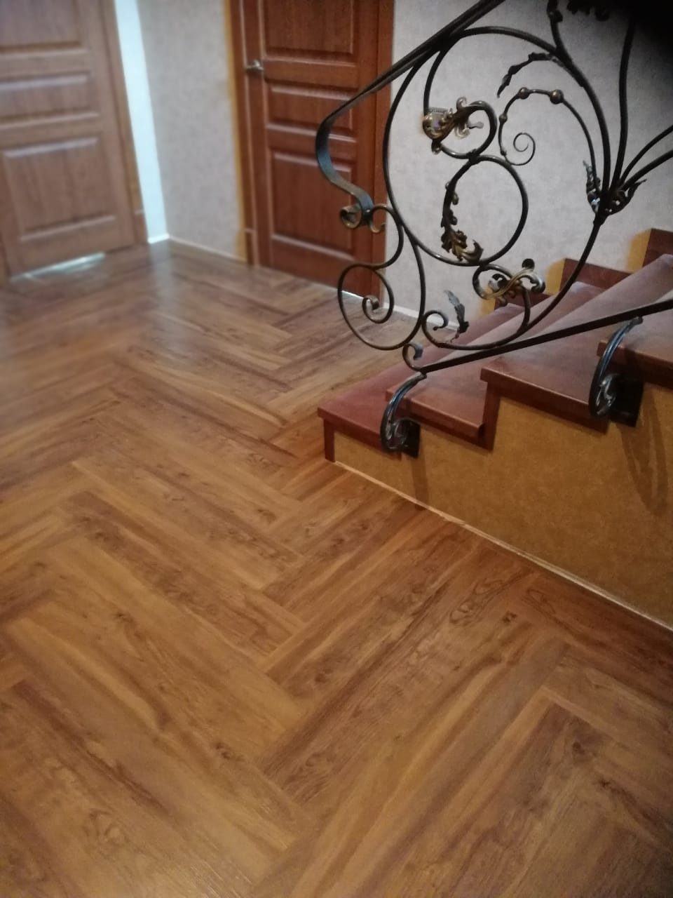
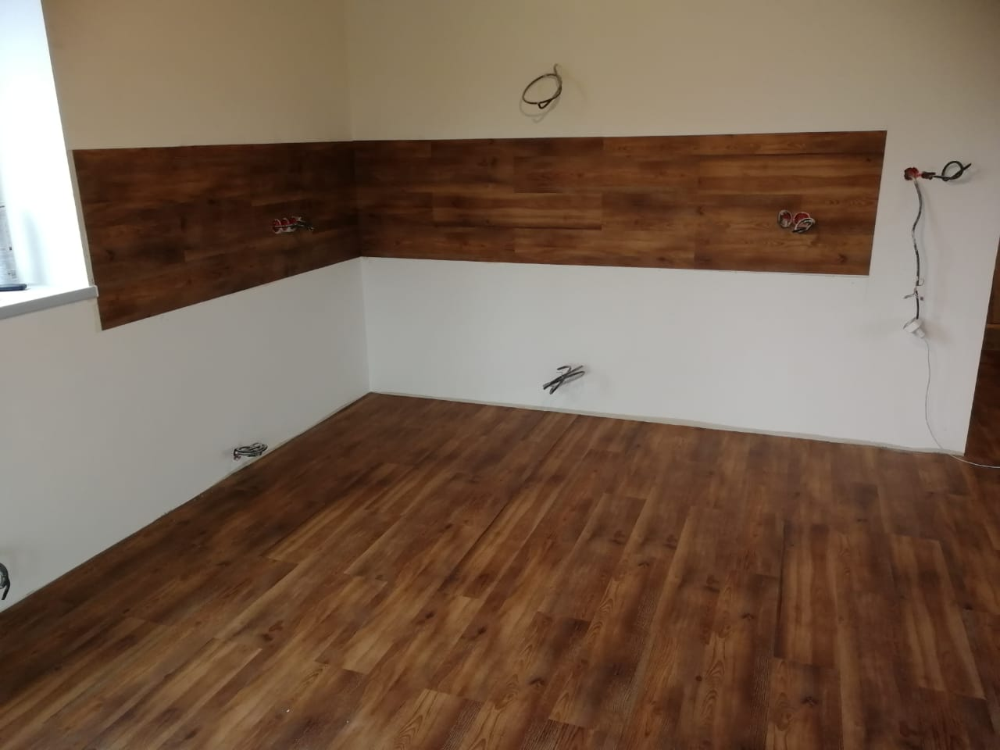
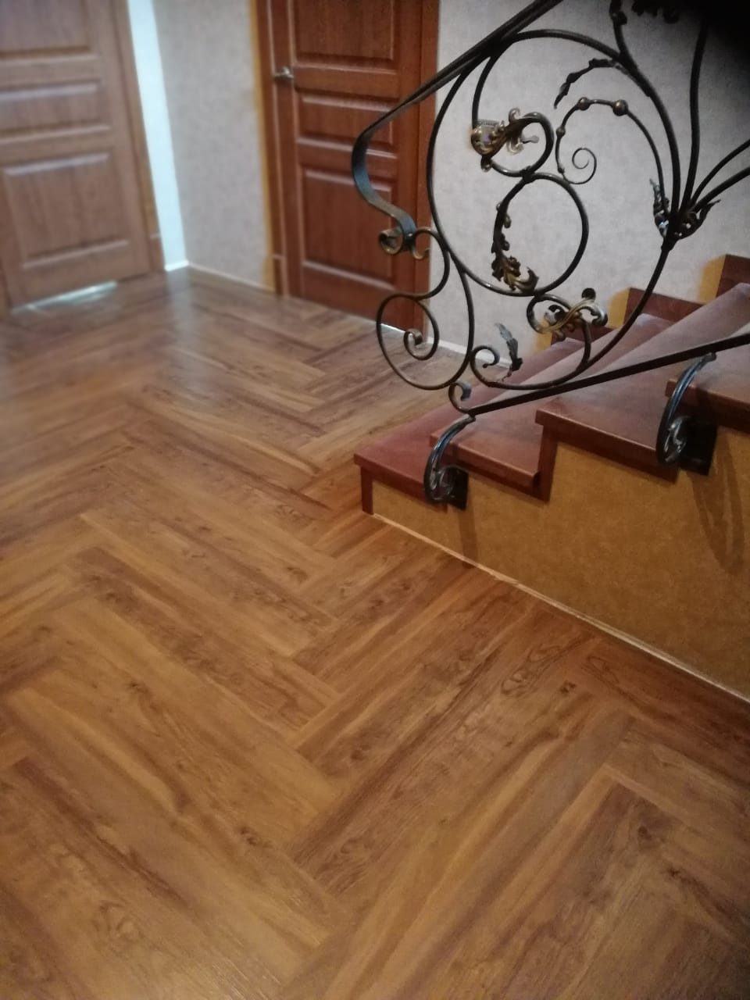
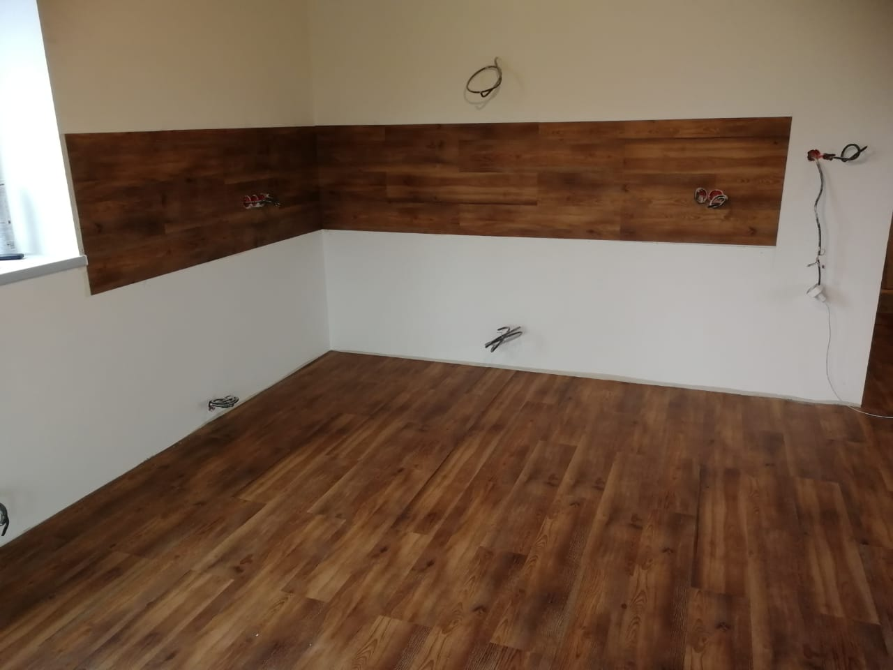

.jpg)
.jpg)
.jpg)
Полимерное покрытие является многослойной "конструкцией", состоящей из таких слоев, как:
Грунт — укрепление поверхности основания под наливной пол;
Базовый слой — устранение дефектов поверхности;
Основной слой — слой, отвечающий за основные характеристики пола: фактура, цвет, физические свойства;
Заключительный/финальный слой — прозрачный/матовый лак — защита основного слоя от физических воздействий.
Грунтовка, шлифовка, заливка, всё это - важная часть укладки любого напольного покрытия, а значит и работа должна быть выполнена качественно и правильно.
Как правило, на стоимость укладки ковролина влияют следующие факторы из которых складывается цена:
Объем работы;
Вид укладки коврового покрытия - свободная укладка, фиксация на клей, на двухсторонний скотч или гриппер-рейки;
Подбор рисунка;
Необходимость сварки швов;
Укладка по дизайн-проекту;
Необходимость подготовки основания;
Так же мы проводим все необходимые работы по ремонту или подготовке основания пола под укладку ковролина и других ковровых покрытий. Ковровые покрытия и ковролин, помимо эстетической красоты, приносят и практическую пользу. Благодаря хорошей теплоизоляции он помогает сэкономить до 10% расходов на подогрев помещения.
.jpg)
.jpg)
.jpg)
Линолеум — практичное и привлекательное внешне напольное покрытие, которое встречается в домах, квартирах, на дачах, в офисах, торговых центрах, общественных заведениях… Практически везде. Направления укладки покрытия. существует целый ряд правил, но единых рекомендаций все же нет. Здесь все зависит от размеров помещения и рулонов, способа крепления полотен, освещения и других факторов. Существует два способа укладки линолеума – сухой и клеевой. Для помещений площадью не более 20 кв. метров обычно применяется свободная укладка без применения клея. Это самый простой способ укладки линолеума. Но для большей надежности рекомендуется использовать легкое скрепление двусторонним скотчем Укладка линолеума требует точности и внимательности. В ином случае, результат не принесёт ни пользы, ни локаничности.
.jpg)
.jpg)
.jpg)
Производители виниловых напольных покрытий непрерывно совершенствуют продукцию, чем часто предельно упрощают монтаж. Однако, даже с подробной инструкцией, укладка ПВХ плитки на пол — достаточно сложная процедура с множеством нюансов, которые может учесть только опытный мастер. При этом самое важное — тщательная подготовка основания, так как малейшие изъяны будут видны на финишном покрытии пола.
Выполняется укладка ПВХ плитки следующим образом:
- Подготовка пола - ремонт основания или выравнивание нивелирующими составами, если имеется необходимость;
- Проведение центровки помещения;
- Равномерное нанесение клея ПВХ на подготовленную поверхность основания;
- Укладка ПВХ плитки на клей;
- Надавливание вручную, трамбовка валиком, прикаточными вальцами или - притирочной доской для устранения пузырей;
.jpg)  
 Укладка бесшовного покрытия. Монтаж бесшовного покрытия из резиновой крошки возможен на твёрдое основание и на щебенку. Есть особые требования к погодным условиям: должна быть сухая тёплая погода (не менее 10 °C), а основание сухим и без луж.
Перед укладкой бесшовного покрытия сперва подготавливается основание – зачищается и обрабатывается грунтовкой. После чего готовится резиновая масса (резиновая крошка, пигмент и полиуретановый клей) и засыпается на подготовленную поверхность, трамбуется и прокатывается специальным валиком. По окончании монтажных работ, площадка должна сохнуть не менее 24 часов.
Монтаж резиновых рулонных покрытий. Монтаж рулонного покрытия возможен исключительно на твёрдое основание - бетон, асфальт, дерево и т.п. Для этого требуется подготовить поверхность – очистить от пыли и грязи и обезжирить. После чего наносится клей. Покрытие укладывается на клей и раскатывается тяжёлым металлическим валиком. Излишки клея необходимо устранить, т.к. после застывания он желтеет. Использовать покрытие можно не менее, чем через 12 часов.
.jpg)
.jpg)
.jpg)
Технология устройства наливного основания для спортивных объектов предполагает применение полиуретанового полимера, продляющего срок его службы. Укладка спортивного наливного покрытия проходит в несколько этапов:
- Устройство бетонного основания, либо подготовка (выравнивание, очищение от грязи и пыли) уже имеющегося;
- Грунтование поверхности – состав перед нанесением следующего слоя должен тщательно высохнуть;
- Распределение наливной смеси (в один или несколько слоев);
- Укладка полиуретанового полимера;
- Нанесение разметки.
.jpg)
.jpg)
.jpg)
При выборе линолеума для медицинских учреждений следует учитывать важные критерии отбора. Оптимальная толщина и ширина рулона линолеума позволяет укладывать его практически во всех типах помещений:
Холл, регистратура, приёмная и коридор - основными критериями, влияющими на выбор, будут лёгкость в уходе, цельность, противоскользящий эффект и долговечность.
Кабинеты врачей, процедурные и палаты - должны иметь хороший дизайн, комфорт при ходьбе, устойчивости к воздействию химических реагентов и гигиеничность.
Напольные покрытия, используемые в рентгеновских кабинетах, лабораториях и операционных - должны обладать такими качествами, как герметичность швов, защита от статического электричества и хорошая токопроводность.
В столовых, душевых и ванных комнатах укладываемый линолеум должен обладать высокой гигиеничностью и сопротивлением скольжению.
.jpg)
.jpg)
.jpg)
Выделяются три типа специальных коммерческих линолеумов: токопроводящий, токорассеивающий, антистатический. Различаются типы специального линолеума по своему электрическому сопротивлению:
Токопроводящий линолеум (106 Ом): 106 Ом;
Токорассеивающий линолеум (106-108 Ом);
Антистатический линолеум (109 Ом): 109 Ом.
Настил антистатических покрытий осуществляется по классической схеме. Демонтируется старая напольная отделка. Далее пол нивелируется и затем обрабатывается токопроводящим раствором. Выровненная плоскость нужна для равномерного распределения напряжения.
.jpg)
.jpg)
.jpg)